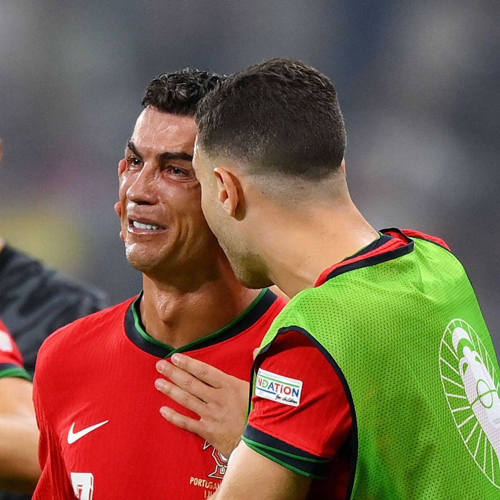

Euro 2024 Penalty Miss & Tears — Redemption or Scene-Stealing?
120 minutes of suffocation: On 1 July 2024, in the Euro round of 16, Portugal faced Slovenia. Regulation ended 0-0; in the first-half stoppage time of extra time (114th minute) Portugal were awarded a penalty — a golden chance to win it.
The costly miss: The 39-year-old Ronaldo took it, only for Slovenian keeper (and long-time Atlético foe) Jan Oblak to make a stunning save, the ball striking the post and bouncing away. Ronaldo had already wasted 5-6 great chances in the match; this penalty could have redeemed everything, but ended in the cruellest way.
Tears on the spot: After the miss, cameras caught Ronaldo red-eyed and weeping on the pitch; during the extra-time interval teammates flocked to console and kiss his forehead. His mother in the stands was also in tears — a moment that quickly became the most-viral image of the Euros.
Shootout redemption: In the shootout Ronaldo asked to take the first kick and slotted it low to make amends. Teammate Diogo Costa went further, saving all three Slovenian penalties, and Portugal went through 3-0. It should have been 'the keeper's night', but the post-match narrative swung back to Ronaldo.
The 'scene-stealing' controversy: Critics argued the credit belonged to Costa, who saved three penalties, but Ronaldo's tears, Ronaldo's redemption, Ronaldo's 'first kick' hogged the entire narrative. The media dubbed it 'The Cristiano Ronaldo Show' — win or lose, the protagonist can only ever be him.
The '0 goals for the tournament' awkwardness: The 39-year-old Ronaldo finished the Euros goalless (0 goals, 1 assist), the oldest but also quietest focal point in Portugal's history. The penalty miss was simply the concentrated eruption of this decline — the man who once decided matches alone is being slowly stripped of his leading-man halo by time.
The manager's backing, and the irony: Manager Martínez backed him afterwards: 'He is our role model… to take the first penalty after missing shows his character.' But the 'backing' itself is steeped in irony — a core who needs the coach to keep insisting 'he matters' is precisely a sign that his importance now has to be argued.